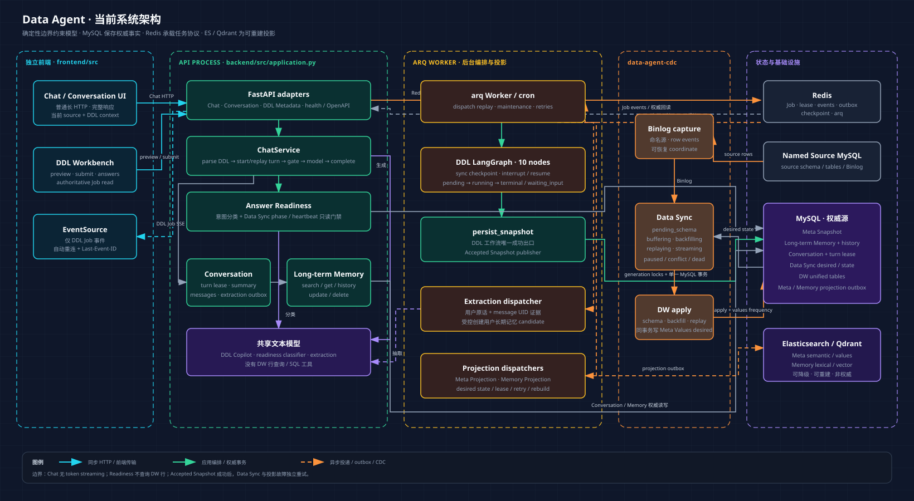
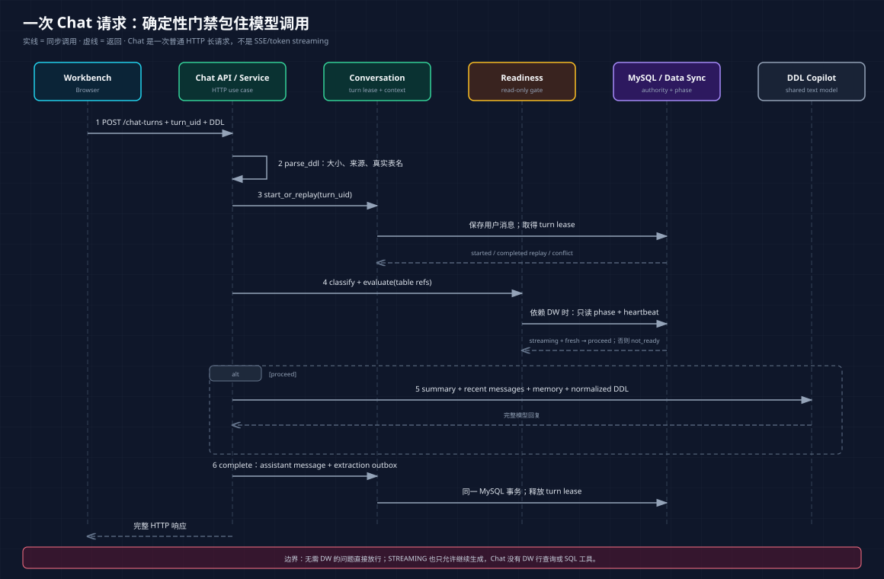
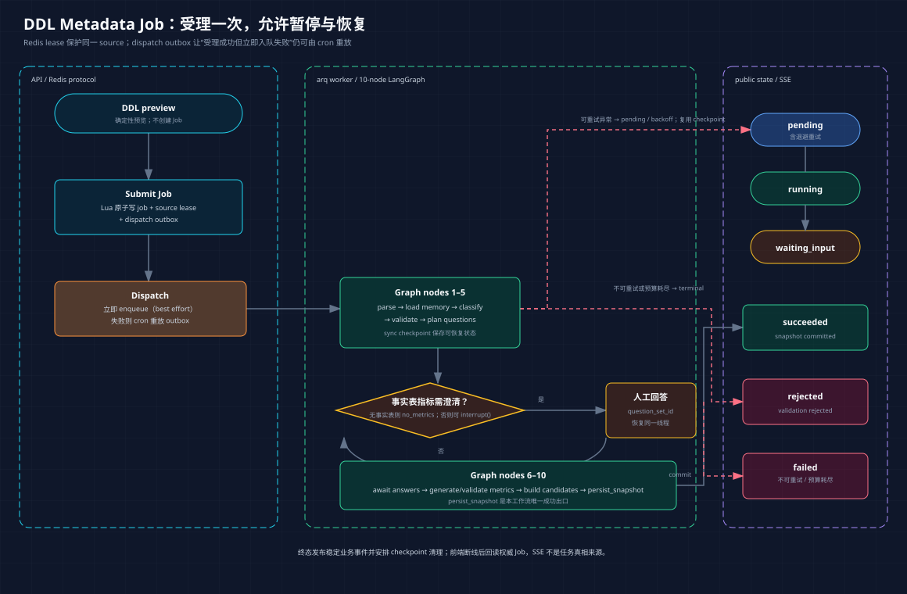
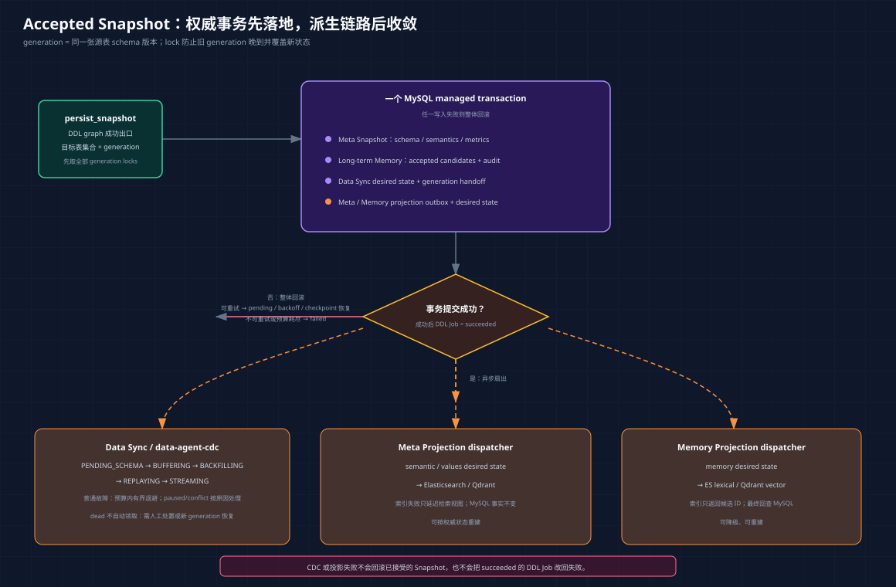
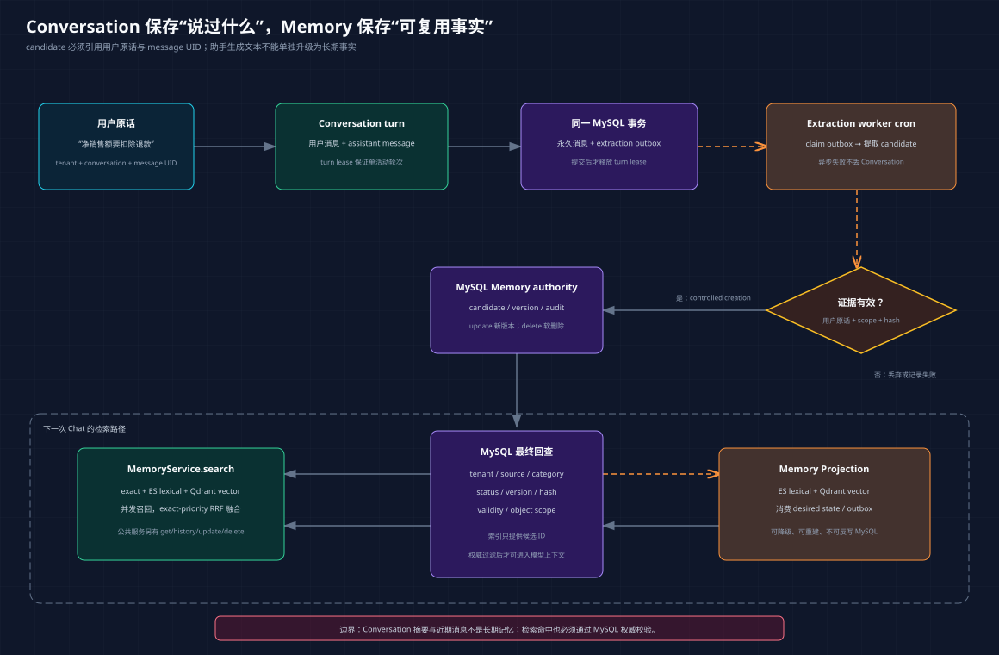

DDL 协作工作台
预览 DDL、提交元数据任务、通过 SSE 观察进度，并在 waiting_input 时提交人工澄清。
以当前代码为准，串起独立前端、Chat、回答就绪门禁、DDL Copilot、Accepted Snapshot、Data Sync、Meta/Memory Projection 与 Conversation。核心原则是：确定性边界约束模型，MySQL 保存权威事实，Redis 承载任务协议，ES/Qdrant 只做可重建投影。
这套系统解决的是“把一份 DDL 安全地变成可追溯元数据，并让对话围绕这份结构协作”。先分清能力边界，才能避免把同步状态、检索投影或模型回答误当成业务数据查询结果。
预览 DDL、提交元数据任务、通过 SSE 观察进度，并在 waiting_input 时提交人工澄清。
围绕当前数据来源与 MySQL DDL 解释结构、追问语义或起草澄清答案。Chat 复用共享文本模型，但不推进 DDL Job。
先识别问题是否依赖完整 DW 数据；不依赖时直接放行，依赖时仅在对应 Data Sync 已 streaming 且心跳新鲜时允许继续生成。
同一个页面同时有 DDL Job 与 Chat。如果把两条传输链路混在一起，前端会把 Job 事件当模型 token，或把 Chat 超时当成 SSE 断线；如果把 readiness 当查询工具，模型还会在没有读取业务行的情况下编造数值。
orders 已 streaming，心跳新鲜。Conversation 与 Memory 的权威文本在 MySQL；DDL Job 协议与 checkpoint 在 Redis；Data Sync phase/heartbeat 由其控制状态维护；ES/Qdrant 只保存可重建的检索投影。
frontend/src/api/ 分别处理 HTTP 与 SSE；backend/src/chat/service.py 编排 Chat；backend/src/answer_readiness/ 只有分类、只读检查与门禁工具。当前没有 DW row-query、SQL executor 或 token streaming adapter。
Chat HTTP / DDL Job SSE；Readiness 只回答“现在是否允许生成回复”。Chat 当前没有 DW 业务行查询、SQL 执行或 token streaming 工具，不能把“数据已就绪”解释为“模型读取了业务数据”。MySQL · 权威源，ES/Qdrant 仅保存派生检索视图。总图回答“请求进入哪个进程、状态由谁拥有、异步工作在哪里发生”。它刻意不把所有模块画成一条 LangGraph：Chat、DDL Worker、Projection 与 CDC 有不同的控制流和失败边界。

单图只表达跨模块关系；状态机、事务与降级规则由下方各节说明。
API 请求、后台一致性任务和持续 Binlog 消费具有不同的资源与故障模型。组合根在启动位置选择 adapters（HTTP、MySQL、Redis、索引等外部转换实现）并注入 application；module 内部通过明确 interface/port 协作，seam 是可替换或可测试的边界。
MySQL 承担业务权威事实，Redis 承担 Job lease/outbox/checkpoint，ES/Qdrant 承担派生搜索视图。Browser 不直接接触任何基础设施。
backend/src/application.py 是 API 组合根；backend/src/ddl_metadata/worker/ 装配 DDL Worker；backend/src/data_sync/worker.py 驱动独立 CDC；frontend/src/ 是唯一前端源码根。
Chat 要解决“同一个问题重试时不重复写消息、并且只在依赖数据达到允许状态时生成回答”。确定性 DDL 解析与 turn lease 位于模型之前；Readiness 会先调用分类模型判断数据依赖，只有门禁返回 proceed 才继续调用 DDL Copilot 生成回答。
长 HTTP 请求可能被客户端重试。没有 turn_uid 幂等与 turn lease（一次会话只允许一个活动轮次的租约），同一句话会重复落库，两个回复还可能交错覆盖摘要。
turn_uid=t-42，“status 字段是什么意思？”
文字版结论：先确定性校验和幂等建轮次；Readiness classifier 随后调用模型分类，分类模型故障会投影为 chat_model_failed 502。分类成功后，data_preparing 与 intent_unresolved 都跳过回答生成，只有 proceed 才调用 DDL Copilot；最后在同一事务中保存回复与抽取 outbox。
frontend/src/api/dataAgent.ts → backend/src/chat/api.py → backend/src/chat/service.pyparse_ddl 确定性校验大小、来源与真实表名。proceed 时将摘要、近期消息、长期记忆和规范 DDL 交给模型。POST /api/v1/conversations/{conversation_uid}/chat-turns 返回完整 Chat 响应；SSE 只服务 DDL Job 事件。用户消息、助手消息、summary、turn 状态与 extraction outbox 落在 Conversation 的 MySQL 表；Data Sync 只向 Readiness 提供 phase/heartbeat；模型响应在完成事务前不是权威会话记录。
backend/src/chat/service.py 编排，backend/src/conversation/application/ 拥有轮次与上下文，backend/src/answer_readiness/service.py 只读判断。Chat 不推进 DDL Job，也不查询 DW 行。
DDL Job 把“可能要调用模型、可能要等人回答”的长流程变成可恢复协议。outbox 是与业务状态一起记录的待投递意图；source lease 是同一数据源的排他租约，避免两个任务同时发布冲突的 schema。
如果 API 先写 Job 再直接发队列，进程恰好在两步之间崩溃，任务会永久停在 pending；如果澄清回答启动一张新图，之前验证状态与问题集合会丢失。
orders.amount 缺少指标计算口径、过滤条件或时间粒度。interrupt()；Job 进入 waiting_input。用户携 question_set_id 回答后恢复 checkpoint；没有事实表时跳过问答。
文字版结论：Redis 先可靠受理，再由立即 enqueue 或 cron 重放完成投递；人工回答恢复同一 checkpoint。运行异常若可重试且仍有预算，会先从 running 回到 pending，经退避后复用 checkpoint；只有不可重试或预算耗尽才进入 failed。
backend/src/ddl_metadata/api/ · backend/src/ddl_metadata/jobs/redis//api/v1/metadata/ddl-preview 只做确定性预览，不创建 Job。EventSource 可自动重连，但服务端不读取 Last-Event-ID，因此不保证重放断线期间的历史事件。backend/src/ddl_metadata/worker/ · backend/src/ddl_metadata/workflow/arq worker 运行 10 个 async 节点：parse_ddl、load_and_validate_memory、classify_metadata、validate_metadata、plan_metric_questions、await_metric_answers、generate_metrics、validate_metrics、build_memory_candidates、persist_snapshot。
interrupt() 把澄清点写入同步 checkpoint；回答带 question_set_id 恢复同一线程。persist_snapshot 是这张 DDL 工作流的唯一成功出口，不是全项目唯一控制流或唯一写入。
pendingrunningwaiting_inputsucceededrejectedfailed
rejected 表示确定性或业务验证不接受结果；failed 只承载不可重试或预算耗尽的执行故障。可重试且预算内的异常保持同一 Job，执行 running → pending 并退避恢复 checkpoint。终态会触发 checkpoint 清理 outbox，而非把内部 LangGraph 节点名暴露给调用方。
Job、source lease、dispatch outbox 与 sync checkpoint 在 Redis；成功结果由 persist_snapshot 进入 MySQL。SSE 是事件传输，不是任务权威状态，断线后必须回读 Job。
backend/src/ddl_metadata/api/ 拥有 HTTP/SSE adapter，jobs/redis/ 拥有原子协议，worker/ 负责 dispatch replay，workflow/ 定义 10 个节点。persist_snapshot 只在这张图内是唯一成功出口。
Accepted Snapshot 解决“多个权威事实必须一起切换版本”的问题；Data Sync 和两类 Projection 解决“耗时外部副作用不能拖住或反转权威事务”的问题。generation 是某张源表的 schema 版本，generation lock 防止旧任务晚到后覆盖新版本。
若先更新 Meta、稍后才记录 Data Sync desired state，进程崩溃会留下“元数据说是新 schema，但 CDC 永远不知道要切代”的裂缝。反过来，把 ES/Qdrant/回填放进主事务，会让外部故障锁住权威数据。
amount 从字符串改为 decimal，并更新“净额”语义。streaming。succeeded。
文字版结论：权威事务只承诺“该 generation 已被接受且异步意图不会丢”；Data Sync 与投影故障都只在预算内自动退避。Data Sync 的 dead 需人工处置或由新 generation 恢复；Meta / Memory 投影达到重试阈值后成为不再领取的死信，需告警并人工重新登记或按权威状态重建。这些链路都不能反向修改权威 Snapshot。
backend/src/ddl_metadata/adapters/mysql/accepted_snapshot.py发布器先取得本次所有目标表的 generation locks，再开启一个 MySQL managed session。以下变化在同一事务中提交或回滚：
| 所有者 | 同事务写入 | 后续消费 |
|---|---|---|
| Meta Snapshot | 物理 Schema、语义 Meta、指标与关联清理 | DDL/Meta 查询与投影构建 |
| Long-term Memory | 过期不兼容版本，写入 accepted candidates、审计、关系及 Memory Projection desired state | 混合检索与用户/DDL 记忆 API |
| Data Sync | 每张目标表的 desired state / generation handoff | 独立 CDC 进程推进 DW |
| Meta Projection | semantic / values desired state outbox | worker 异步收敛 ES/Qdrant |
backend/src/data_sync/独立进程按 desired state 同步 DW 结构、建立 Binlog 位点、回填快照、重放缓冲事件，并进入持续流式同步：
pending_schemabufferingbackfillingreplayingstreaming普通同步故障会在重试预算内有界退避；paused 与 conflict 需要按原因处理后再恢复。预算耗尽进入 dead 后不会被 worker 自动领取，必须人工处置或由后续新 generation 重新建立同步任务。以上故障都不反转已提交的 Meta 事务或 DDL Job 成功状态。
backend/src/ddl_metadata/meta_projection/ · backend/src/memory/两个投影链路都消费 MySQL outbox，将权威事实派生到 Elasticsearch / Qdrant。Meta Projection 覆盖语义对象与字段值；Memory Projection 覆盖长期记忆的词法与向量检索文档。
失败恢复：索引故障只在重试预算内自动退避；达到最大失败次数后，outbox 成为不再被 dispatcher 领取的死信，检索视图可能持续缺失或陈旧。运维必须响应死信告警，人工重新登记投影任务或从 MySQL 权威状态发起重建，不能继续等待自动收敛。
权威关系：Memory 与 Meta semantic 检索由索引返回候选标识，再回查 MySQL 的当前权威内容。Meta values 则直接使用 Elasticsearch 返回的 value_text 与 frequency，MySQL 回查只验证候选字段、表、schema scope 与完整性范围，并不会重新读取字段值或频次。索引可重建，绝不能反向覆盖 MySQL 的结构与状态事实。
Meta、Memory、Data Sync desired state、projection desired state/outbox 同事务落在 MySQL。DW 表由 data-agent-cdc 推进；ES/Qdrant 分别承接 Meta 与 Memory 的派生文档。
ddl_metadata/adapters/mysql/accepted_snapshot.py 拥有事务；data_sync/ 拥有阶段与 CDC；ddl_metadata/meta_projection/ 和 memory/ 各自拥有 projection dispatcher。投影失败不允许反转 DDL Job。
Conversation 保存“这次会话说过什么”；Long-term Memory 保存“跨会话仍可复用、带证据且可修正的事实”。Projection 是从 MySQL 权威事实派生出的搜索视图，不是第二份真相。
直接把助手回复写成记忆会把模型猜测永久化；只靠向量相似度又可能召回跨租户、过期或已删除版本。系统因此把消息保存、证据抽取、候选接受、投影与权威回查拆开。

文字版结论：事务一先保存用户消息并占用 turn lease；模型调用或进程在两段之间失败时，用户消息和活动 lease 会保留，但尚无助手消息或 extraction outbox。事务二才原子保存助手消息、写 outbox 并释放 lease；之后异步抽取有用户证据的 candidate。
backend/src/memory/domain/ · backend/src/memory/application/ · backend/src/memory/adapters/search/get/history/update/delete。backend/src/conversation/application/ · backend/src/conversation/adapters/turn_uid 支持幂等开始、重试和已完成回放。Conversation message/summary/turn/outbox 与 Memory candidate/version/audit 都以 MySQL 为权威。ES 保存 lexical 文档，Qdrant 保存 vector 文档；二者只返回候选标识。
conversation/application/ 拥有 turn 与 extraction，memory/application/ 暴露 search/get/history/update/delete，memory/adapters/ 实现 MySQL/ES/Qdrant。公共服务不存在任意新增入口；受控入口才可创建 candidate。
模块边界解决“谁拥有规则、谁只做外部转换、哪个进程应该依赖哪些资源”。这里的 DDD 是渐进式边界约束：module 聚合一项业务能力，application 编排用例与 port，adapter 把 HTTP/Redis/MySQL/模型协议转换为内部 interface；不是为了目录形式而制造空层。
若 Chat 直接读 ORM/索引结构，或 API 启动顺手运行 CDC，任何存储变化都会穿透所有层。组合根只负责选实现和注入；内层规则只依赖接口，基础设施故障由拥有它的进程按职责决定是否阻止就绪。
/api/v1/health 是不访问外部依赖的 liveness。| 路径 | 边界与职责 | 运行位置 |
|---|---|---|
frontend/src/ | 独立 Vite/React 应用；共享 API 层拥有 HTTP/SSE 解码，Workbench 拥有页面状态 | Browser / 静态托管 |
backend/src/application.py | 组合根：选择 adapters / infrastructure 并装配 FastAPI 服务；不承载领域规则 | API process |
chat/、answer_readiness/ | Chat 用例编排与只读就绪 seam；共享模型通过明确 interface 调用 | API process |
ddl_metadata/ | DDL Metadata module；API adapter、Redis Job 协议、LangGraph workflow、accepted snapshot adapter、Meta Projection；CDC 通过 Meta Values 输入端口参与 DW 物化事务 | API + arq worker + data-agent-cdc（Meta Values 输入） |
conversation/、memory/ | application 定义用例/ports，adapters 完成 MySQL、模型与索引转换；domain 不依赖外部框架 | API + arq worker |
data_sync/ | Data Sync module；API 只读 phase/heartbeat 门禁，arq Worker 在 Accepted Snapshot 权威事务中写入 desired state，CDC 推进 schema、backfill 与 binlog 同步阶段 | API + arq worker + data-agent-cdc |
infrastructure/、models/ | 前者提供低层资源；后者只保存确实跨 feature 的后端契约，不是全项目 umbrella namespace | 按组合根注入 |
只初始化客户端并装配 API 资源，提供 HTTP、OpenAPI 与不访问外部依赖的 liveness；不执行外部依赖 readiness probe，也不挂载前端静态资源。
装配 DDL graph、队列、checkpoint、Conversation extraction 及两类 projection dispatcher。Meta 索引不可用会阻止 worker 就绪；仅非结构性 Memory 索引故障允许降级。
单独运行 data_sync.worker，持有源 Binlog 消费与 generation 协调；它通过 Meta Values Projection 输入端口，在同一 DW 写事务内应用 before/after 频次差量并写 refresh desired state。arq worker 随后异步刷新索引。
每个 bounded context 拥有自己的业务状态和 adapter；跨模块共享的是标识符、事件或明确 port，不共享 ORM 实体。前端状态只在 frontend/src/，后端不打包或挂载前端资源。
backend/src/application.py、backend/src/{chat,answer_readiness,ddl_metadata,conversation,memory,data_sync}/、backend/src/infrastructure/ 与 frontend/src/api/ 是当前定位。模块内部 contract 不自动等于全项目 Shared Kernel。